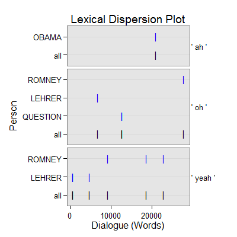

dc_filled_pause(text.var, grouping.var, n.before = 1, tot = FALSE, n.after = n.before, ord.inds = TRUE, markup = c("<<", ">>"), name = "filled_pause", ...)
TRUE condenses sub-units (e.g., sentences)
into turns of talk for that grouping.var.TRUE inds is ordered least to greatest.c("", "") to not mark the filled pause discourse
markers.termco.Returns returns a list of 2:
countsA termco object of filled pause discourse marker counts.
filled_pauseA trans_context object of filled pause discourse connectors in context.
Extract filled pause discourse connectors in context.
Ward, N. (2000, October). Issues in the Transcription of English Conversational Grunts. Proceedings of the 1st SIGdial Workshop on Discourse and Dialogue (pp. 29-35). Hong Kong: Association for Computational Linguistics. Retrieved from http://www.aclweb.org/anthology/W00-1004
Linguistic Data Consortium. (2004) Simple metadata annotation specification (MDE). University of Pennsylvania. Retrieved from http://www.itl.nist.gov/iad/mig/tests/rt/2004-fall/docs/SimpleMDE_V6.2-draft.pdf
out <- with(pres_debates2012[1:2000, ], dc_filled_pause(dialogue, person)) out[1]$counts person word.count filled_pause 1 OBAMA 12317 1(.01%) 2 ROMNEY 12926 4(.03%) 3 CROWLEY 1670 0 4 LEHRER 765 4(.52%) 5 QUESTION 583 2(.34%) 6 SCHIEFFER 505 0out[2]$filled_pause =================================== Event 1: [lines 44-46] OBAMA: Is that a is that a separate topic? ** LEHRER: <<Yeah>>, we're going to <<yeah>>, I want to get to it. OBAMA: I'm sorry. =================================== Event 2: [lines 330-332] OBAMA: Well, I definitely think there are differences. ** LEHRER: And do you <<yeah>>. OBAMA: The first role of the federal government is to keep the American people safe. =================================== Event 3: [lines 448-450] OBAMA: You've done a great job. ** LEHRER: <<Oh>>, well, no. LEHRER: But the fact is government the role of government and governing, we've lost a pod in other words. =================================== Event 4: [lines 602-604] ROMNEY: Thanks Jeremy. ** ROMNEY: <<Yeah>>, you bet. CROWLEY: Mister President? =================================== Event 5: [lines 876-878] QUESTION: Governor Romney, you have stated that if you're elected president, you would plan to reduce the tax rates for all the tax brackets and that you would work with the Congress to eliminate some deductions in order to make up for the loss in revenue. ** QUESTION: Concerning the these various deductions, the mortgage deductions, the charitable deductions, the child tax credit and also the <<oh>>, what's that other credit? QUESTION: I forgot. =================================== Event 6: [lines 879-881] OBAMA: You're doing great. ** QUESTION: <<Oh>>, I remember. QUESTION: The education credits, which are important to me, because I have children in college. =================================== Event 7: [lines 1279-1281] ROMNEY: You might say, Well, you got an example of one that worked better? ** ROMNEY: <<Yeah>>, in the Reagan recession where unemployment hit ten. ROMNEY: eight percent, between that period the end of that recession and the equivalent of time to today, Ronald Reagan's recovery created twice as many jobs as this president's recovery. =================================== Event 8: [lines 1460-1462] QUESTION: This question actually comes from a brain trust of my friends at Global Telecom Supply in Minneola yesterday. ** OBAMA: <<Ah>>. QUESTION: We were sitting around, talking about Libya, and we were reading and became aware of reports that the State Department refused extra security for our embassy in Benghazi, Libya, prior to the attacks that killed four Americans. =================================== Event 9: [lines 1584-1586] CROWLEY: Governor Romney, the question is about assault weapons, AK forty sevens. ** ROMNEY: <<Yeah>>, I'm not in favor of new pieces of legislation on on guns and taking guns away or making certain guns illegal. OBAMA: because I do believe that if our young people have opportunity, then they're less likely to engage in these kind of violent acts. =================================== Event 10: [lines 1929-1931] ROMNEY: Number two, with regards to Iraq, you and I agreed I believe that there should be a status of forces agreement. ** ROMNEY: <<Oh>> you didn't? ROMNEY: You didn't want a status of|plot(out)
## Save externally use .doc or .txt ## print(out[[2]], file="filled_pause.doc")